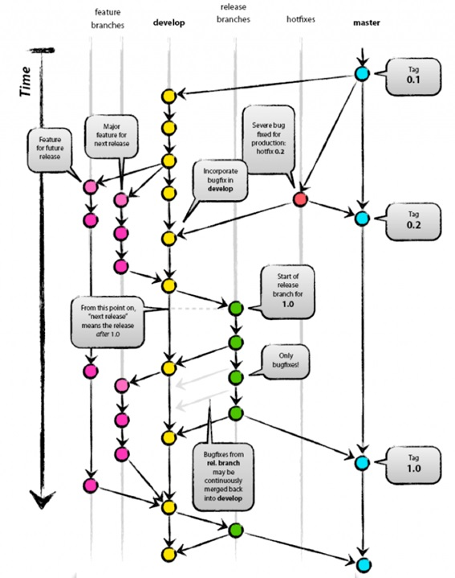

2. Environments¶
The different phases defined for software development are followed:

In the development phase, it will be achieved:
- Integrate the work of different developers in a central repository, resulting in an updated and consolidated version of the code.
- Automate the integration tests and their validation before being moved to the next environment.
- Send the code to the next environment if the tests have been passed successfully.
Once the integration tests in the development environment have been passed, the code will be moved to the pre-production (test) environment. Here the validation tests will be performed to the whole software, with the objective of locating any error before reaching the production environment and thus avoid problems arising from them. This environment can also be used as a demo environment, where the final customer can test the new application or the modifications or corrections made to the existing application. From here, the customer’s impressions will be extracted and possible deficiencies in the initial requirements, in the design or in its implementation will be located early on. Finally, the version will be moved into the production environment.
So, the Dx29 application is divided into three environments:
- The development environment, for programmers.
- The test environment for the pre-production phase.
- The production environment for users.
On the one hand, these environments are created as Kubernetes clusters on Azure: AKS.
A Kubernetes cluster is a collection of node machines running containerised applications. A cluster contains, at a minimum, a control plane and one or more compute machines or nodes. The control plane is responsible for maintaining the desired state of the cluster and controlling, for example, which applications are run and which container images are used. The nodes are the ones that actually run the applications and workloads.
Kubernetes clusters have a desired state, which defines the applications or workloads that should be running, the images that are used, the resources that should be available, and other configuration details. The desired state is defined through configuration files composed of manifests. These are JSON or YAML files that indicate the type of application to be run and the number of replicas required to keep a system running smoothly. The desired state of the cluster is defined using the Kubernetes API. This can be done from the command line (with kubectl) or by using the API to interact with the cluster and set or modify the desired state. Kubernetes will automatically manage the cluster to match that state. So, depending on the environment we will set this desired state to 1 or two. This means that this number of replicas of the application should be running. If one of the containers fails, Kubernetes will notice that there are fewer replicas running and will add the replicas needed to achieve the desired state.
With that, these are the main concepts for working with a Kubernetes cluster:
- Nodes: machines that perform the requested tasks assigned by the control plane.
- Pod: a group of one or more containers deployed on a single node. It is the smallest and simplest object in Kubernetes.
- Service: A way to expose an application running on a set of pods as a network service. This separates the task definitions from the pods.
- Volume: A directory containing data, which can be accessed by containers in a pod. A Kubernetes volume has the same lifespan as the pod that contains it. However, it outlasts any of the containers running within the pod, and data is retained when any of them are restarted.
- Namespace: Virtual cluster. Allows Kubernetes to manage multiple clusters for different machines or projects within the same physical cluster.
As we have already seen, the Dx29 architecture is a microservices architecture that will be deployed in Azure. The architecture consists of the following components:
- Azure Kubernetes Service (AKS). AKS is a managed Kubernetes cluster hosted in the Azure cloud. When using AKS, Azure manages the Kubernetes API service, and you only need to manage the agent nodes.
- Azure Load Balancer. After creating an AKS cluster; it is ready to use the load balancer. Then, once the NGINX service has been deployed, the load balancer will be configured with a new public IP address that will be put in front of the ingress controller. In this way, the load balancer routes the Internet traffic to the gateway.
- Azure Container Registry. Use Container Registry to store private Docker images, which are deployed to the cluster.
- Helm. Helm is a package manager for Kubernetes, a way to group and generalize Kubernetes objects into a single unit that can be published, deployed, versioned, and updated.

To deploy the three environments, we will follow these steps for each one:
- Prepare an application for Azure Kubernetes Service, the tutorial can be found here
- Deploy and use Azure Container Registry, the tutorial can be found here
- Deploy an Azure Kubernetes Service (AKS) cluster, tutorial available here
- Run applications in Azure Kubernetes Service (AKS), tutorial available here
- Update an application in Azure Kubernetes Service (AKS), tutorial available here
In addition to all this, it must be taken into account that we will be working with secret values and keys and therefore this file must be included in the cluster corresponding to each environment. This can be done as indicated in this link.
On the other hand, each environment will use specific resources or containers. Thus:
- Azure Kubernetes Service AKS.
- Container registry for Docker images of the microservices and the web application.
- There will be database containers and blobs for each environment:
- Database SQL for manage user credentials
- MongoDB databases with SQL API for users Dx29 data
- Azure blob storage for users Dx29 data
In this section we will only explain the architecture of the application environments and the steps to follow for the build and the deploy of the application. Therefore, the section will be divided into different sections, one for each environment and the latest is common for automatization the creation and the deployment of the environments.
For the development and versioning all projects we will follow the GitFlow defined in this guide.

It consists of a division by branches according to the task to be performed. Like this:
- The master branch will contain the latest version of the code uploaded to production.
- The develop branch will be used to prepare the next versions. It will be the main branch on which the developers will work.
- Feature branches will be created to implement the functionality of the tasks defined in each sprint.
- Hotfixes branches will be created to implement the bugs defined in each Sprint.
- The releases branch will serve as a link between the development and master branches. It will be the one on which the following versions will be built and added to the production.
Thus, there will be a relationship between each of the branches:
- The Develop branch is generated from the Master branch. This is part of the latest production version when starting a Sprint.
- Features branches are created from the Develop branch. A branch will be created for each Sprint Task.
- From the Master branch the Hotfixes branches are created where the Sprint bugs will be resolved.
- The releases branch will be the union between Develop and Master, so that to move to Master (new version) you will first have to move from Develop to the releases branch, and then perform a validation phase. When this validation phase is finished, you can move to the Master branch.